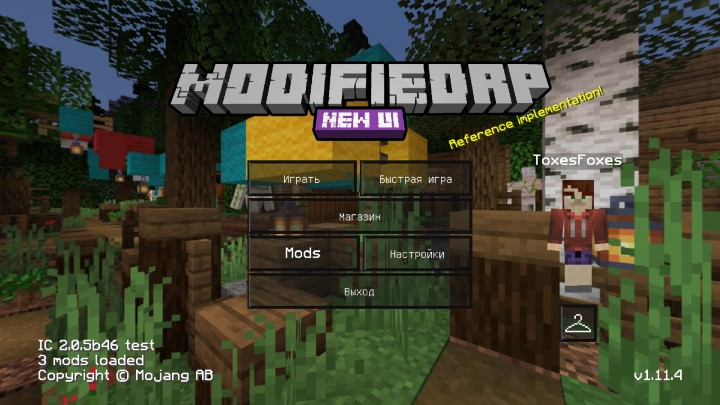
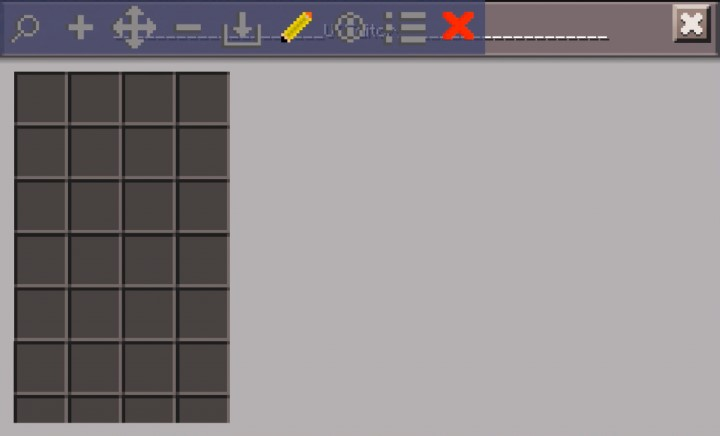
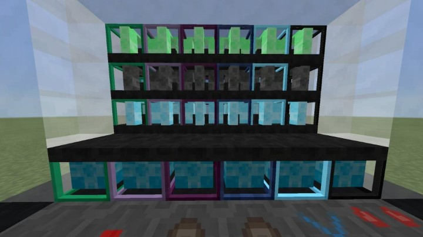

TooManyMods
Портирование модификаций с ПК на Android
Под движок
InnerCore 2.0

ModifiedRP
Ресурспак, собранный из специально отобранных ресурспаков. Специально для InnerCore.
Скачать c ICMods
UIEditor
Утилита для разработчиков модов. Позволяет создавать и изменять интерфейсы InnerCore.
Скачать c ICMods


ValkyrieMods
Несколько модификаций от ValkyrieOfNight объединённых в один мод.
Скачать c ICMods